Modules

This section brings together some of the work produced during the Units of the course "Deciphering Big Data"
Unit 1 - Introduction to Big Data Technologies and Data Management
During the first unit, I had the opportunity to explore the definition of big data and the methods and techniques for managing it, which were organized into four steps: cleansing, standardization, formatting, and normalization. I also reviewed the definitions of data formats, including structured, semi-structured, and unstructured data, and the definitions of CSV, JSON, and XML, which will be revisited in the following section. As an activity, I picked up the e-portfolio that I had already started and began organizing the main page and the “About Me” section. In addition, I participated in the collaborative discussion on “the data collection process.”
Collaborative Discussion - Initial Post
As mentioned above, during this Unit, I took part in a collaborative discussion on data collection process. The screenshot below represents my initial post/p> 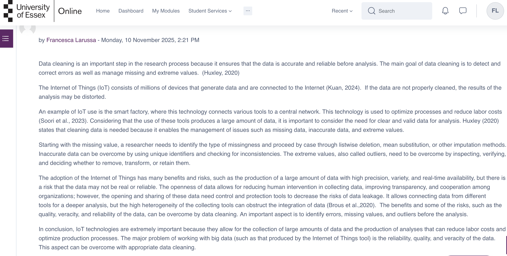
Unit 2 - Introduction to data Types and Formats
In this Unit, the focus was on tools to manage big data that are useful for managing, analyzing, and visualizing it. After reading Chapter 8 (8.29 - 8.35) of Sardar and Pandey's book titled "Big Data Computing”, I learned that typical analytical tools are used to manage, refine, discover, predict, and validate data. The most commonly used tools are NoSQL,Cassandra, Apache Hadoop and MapReduce, Apache Mahout, Storm, and Apache Spark. The choice of one tool over another is based on the specific needs. Considering the ones listed before, NoSQL is chosen for managing unstructured and non-relational data, Cassandra ensures replication and high availability, Hadoop and MapReduce can be chosen for distributed storage and batch processing, Mahout is used for scalable machine learning algorithms, Storm is used for real-time streaming data, and Spark allows fast in-memory processing. Delving into this aspect allowed me to participate in the team project meeting with in-deep knowledge of the topic and engage in the discussion on which server would be better for the implementation of the database. During this unit, I also continued my collaborative discussion on "The Data Collection Process," writing two peer reviews.
Collaborative Discussion - Peer Reviews
As mentioned above, during this Unit, I took part in a collaborative discussion on data collection process. The screenshot below represents my peer reviews
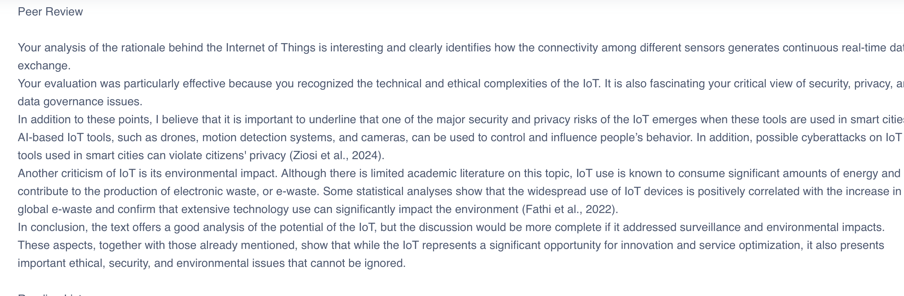Unit 3 - Data Collection and Storage
During Unit 3, I learned to use the pandas library for data cleaning and preparation. Because the datasets contained missing values, poorly formatted strings, duplicates, outliers, and repeated categories, I was able to overcome these issues using pandas.For example, Pandas allows us to recognize the missing values and remove or modify them and transform data through commands such as Replace, rename, map, cut, and qcut , which were used when working with categorical data. In addition, the use of categorical data commands, such as group by and value_counts, is faster and uses less memory.In the book “Big Data Computing: Advances in Technologies, Methodologies and Applications”, I learned that big data can be managed in two ways: batch processing and stream processing. Batch processing can be used to elaborate on largevolumes of data periodically, whereas stream processing is used for real-time analysis. Cloud providers offer tools for storage, processing, analytics, and data orchestration. The major advantages are scalability and advanced insights, while the disadvantages are data security, cost, and complexity. During this Unit, I concluded the collaborative discussion “The Data Collection Process," with a summary post, and I also did a web scraping exercise and posted it on the wiki module.
Collaborative Discussion - Summary Post
As mentioned above, during this Unit, I took part in a collaborative discussion on data collection process. The screenshot below represents my summary post
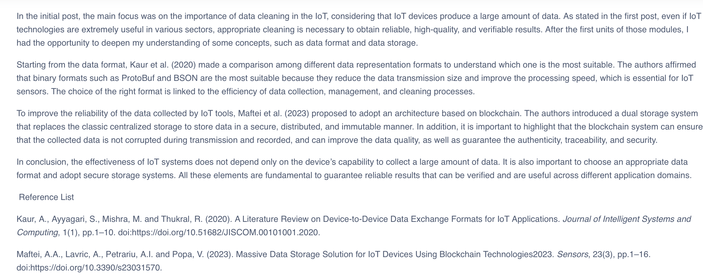Web Scrapping exercise
Web Scraping In this activity, I created a Python script to extract and organize information from the Prospectus webpage discussing the Data Scientist role. The goal was to identify the key content of the professional profile. The data were then collected in a JSON file to allow easy and structured consultation for the content analysis. The script is as follows:
from bs4 import BeautifulSoup
import requests
import json
url= "https://www.prospects.ac.uk/job-profiles/data-scientist"
response = requests.get(url, headers={"User-Agent": "Mozilla/5.0"})
soup= BeautifulSoup(response.text, "html.parser")
print("Title:", soup.find("h1").text)
print("\n Data Scientist content:\n")
results = soup.find_all(string=lambda text: "data scientist" in text.lower())
for r in results[:10]:
print("-", r.strip())
with open("data_science.json", "w") as f:
json.dump({"results":[r.strip() for r in results]}, f, indent=4)
print("\nFile JSON correctly created”)
Unit 4 - Data Cleaning and Transformation
In Unit 4, the focus is on data cleaning. The main commands are:
- Isna(), notna(), dropna(), fillna() used to handle missing values
- Duplicated(), drop_duplicates() used to remove duplicate rows
- Map(), replace() used to transform and replace values
- Rename() used to rename rows and columns
- Cut() and qcut() used for binning and discretization
- Abs(), any() used to filter outliers
- Sample(), permutation () used to randomly select and shuffle data
- Get_dummies() is used to create indicator/dummy variables for machine learning
- .astype() with ‘Int64’, ‘string’, and ‘boolean’ Pandas extension types that allow missing values in integer, string, or boolean columns.
During this Unit, there was an exercise to follow from the book “Data Wrangling with Python” by Kazil and Jarmul (2016). Although the pages were specified in the exercise, I could not find them because the book was available online. I searched for the terms “mn.csv” and “mn_header.csv,” and the search led me to Chapter 7. In addition, I completed the data management pipeline test, and the results are visible in the screenshot below.
Through this unit, I learned that the data cleaning process is extremely important and directly affects data quality and reliability for subsequent analysis or machine learning applications.
Lecturecast Exercise
As mentioned above, during this Unit, I completed the exercise proposed in the lecturecast. Above it is possible to download the PDF with the explanation of the exercise, and the python code. Here it is possible to see a screenshot of the results.
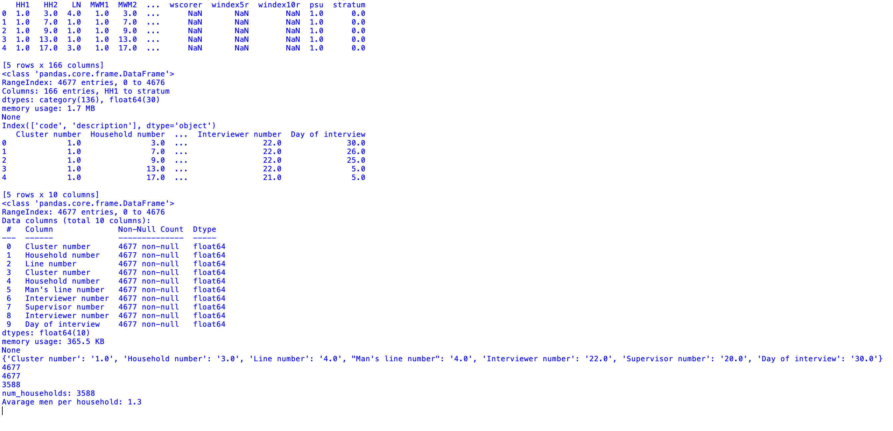 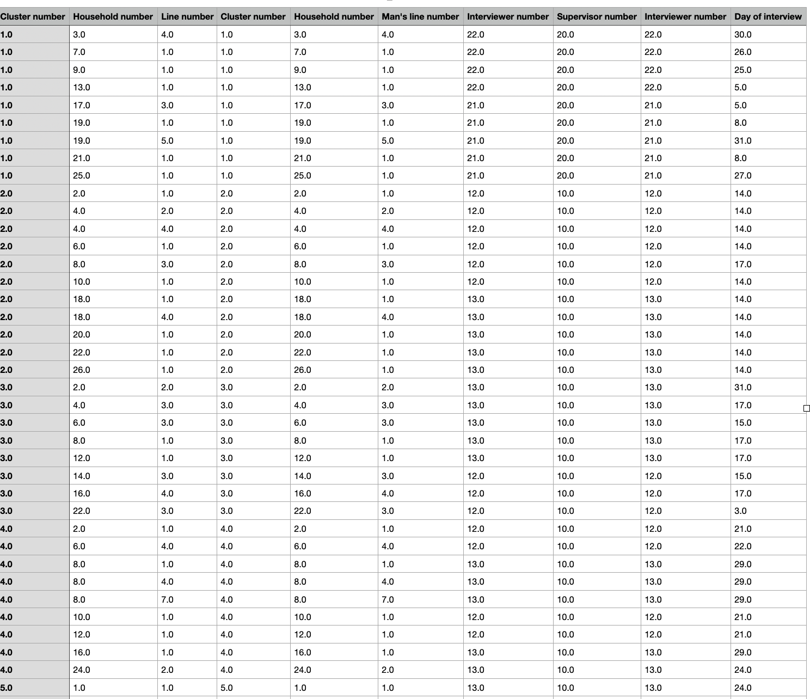Exercise download
-
Here you can download the original dataset
Download orginal dataset -
Here you can download the resulting dataset from the exercise
Download post exercise dataset -
Here you can download the python code
Download Python code -
Here you can download the exercise explanation
Download Exercise explanation
Data Management Pipeline Test
During the unit, I completed Data Management Pipeline Test and made three attempts. On the fist attempt, I scored 4.77, on the second attempt I scored 8.75 and finally on the last attempt, I scored 10.00 as shown in the screenshot
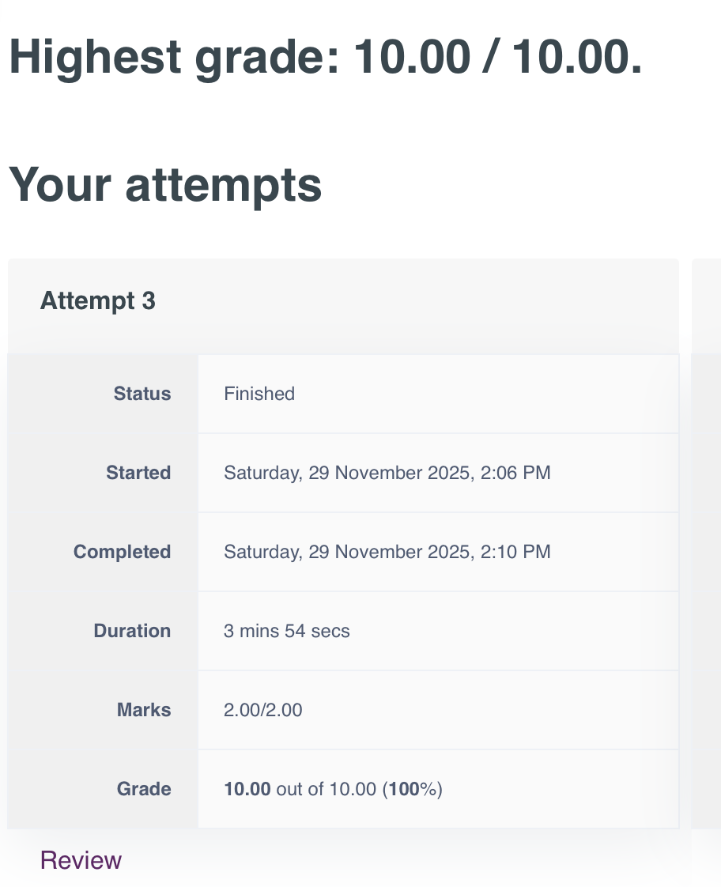Unit 5- Data Cleaning and Automating Data Collection
This unit was the natural continuation of Unit 4 and focused on Big Data analytics and pipeline procedures.
Big data analytics enables us to analyse large quantities of data to find patterns and trends to improve decision-making. The main differences from traditional data analysis are that big data uses all types of data (structured, unstructured, and semi-structured), is faster because it processes data in real time, uses tools such as Hadoop, Spark, NoSQL, and machine learning, and can perform predictive and prescriptive analyses.
In big data analytics, the pipeline process is described as follows:
- Data collection through databases, sensors, etc
- Data storage using HDFS or a NoSQL database
- Data processing using Spark, Flink, and MapReduce
- Data analysis using machine learning, statistics, and prediction
- Data visualisation using a dashboard for faster decision-making
Conversational AI can be defined as a chatbot and virtual assistant that understands and communicates using human language.
The case study presented in this unit was the use of both BDA and Conversational AI in agriculture to support productivity, sustainability, cost reduction, and food security.
The concepts of Data Pipeline Automation and DataOps are discussed next. The data pipeline can be defined as the process that allows the collection, transformation, and preparation of data for machine learning or data analysis. DataOps aims to automate these practices to improve productivity and speed. The main challenge is that, nowadays, pipeline processes are usually not repeatable because they are managed by different people using different tools. This slows down development and increases the possibility of errors in the model.
An example of DataOps is Infoworks.io, which automates the data pipeline to handle tasks such as data ingestion, transformation, and preparation.
Through this unit, I delved into the pipeline process, and I learned that data pipelines can integrate multiple technologies to transform raw data into practical insights.
Unit 6 - Database design and Normalisation
During Unit 6, the main focus was on database design and normalisation. In particular, the unit highlights the importance of data cleaning, as well as the concept of standardisation, meaning transforming data to have a mean of 0 and a standard deviation of 1, and of normalisation, meaning scaling data values between 0 and 1.
The normalisation process was explored in depth, explaining how to prevent anomalies and introducing the Normal Forms, which are three:- 1NF: all data has a single value
- 2NF: each data depends on a primary key, and must be in 1NF
- 3NF: no data depends on other data that are not key and must be in 2NF
Particularly important was the definition of primary keys, used to maintain integrity, and foreign keys, used to ensure referential integrity. This aspect was useful also in the perspective of the team project, which was to be submitted at the end of the unit.
In this unit, the main activity was to submit the team project and the peer evaluation template.
Below, it is possible to download the PDF of the team project and the peer evaluation template.
Development Team Project - Project Report
As mentioned above, during this Unit, I had to submit a Team project that can be downloaded here
Download PDFPeer Evaluation Template
Here you can download my Peer Evaluation Template
Download PDFUnit 7 - Costructing Normalise Table and Database Build
In Unit 7, the main learning outcomes focused on database design, implementation, and database management system performance comparisons. The book on database design and implementation was extremely useful for learning more about the information system, SQL operations, normalization, database design and modelling, and how to transform data models into data designs. The article on database management system performance comparisons defined the three major DBMS families: RDBMS, NoSQL, and NewSQL, highlighting the advantages and disadvantages of each system. In this Unit, there were two activities: a normalization task and a data build task; both exercises are presented below. Through this unit, I learned that different database management systems significantly impact performance, scalability, and use-case suitability. This insight was particularly important during the writing of my final project.
Normalisation and Database Build task
During this unit, I completed two main practical tasks focused on database design and data integrity.
- Normalisation task: normalise an un-normalised data table to the Third Normal Form (3NF)
- Database build task: implementation of a relational database using MySQL
Exercise download
-
Here you can download the SQL code (Database Build Task)
Download sql code -
Here you can download the normalisation task explanation
Download PDF -
Here you can download the database build task explanation
Download PDF
Unit 8 - Compliance and Regulatory Framework for Managing Data
In Unit 8, the focus was on compliance and regulatory frameworks. Compliance comprises standards, regulations, policies, and controls, all of which work in synergy with existing rules. The main role of compliance is to ensure that businesses consider the implications of using big data and that new data types and methodologies meet legislative requirements.
Compliance goals include controlling access through processes, securing data at rest, protecting and storing cryptographic keys, and creating trusted applications and environments to protect the data. The unit also addresses security challenges, such as the need to protect big data, the fact that the data are all unique and often impossible to recreate if lost, and the importance of controlling access to the data. Additional issues discussed include availability, performance, and liability.
The unit then focuses on the UK GDPR, particularly Articles 5 and 6, and the ISO/IEC 27000 standard, which is the one adopted in the UK.
The ISO/IEC 27000 series focus on information security in businesses to prevent data breaches and cyberattacks.
In this unit, the main activity was participating in the collaborative discussion “Comparing Compliance Law” by making an initial post.
This unit allowed me to understand the importance of legal compliance and security standards in database design. It had a significant impact during the writing of my final project, as it enabled me to produce a more comprehensive and robust project.
Collaborative Discussion - Initial post
As mentioned above, during this Unit, I took part in a collaborative discussion on Comparing compliance laws. The screenshot below shows my initial post
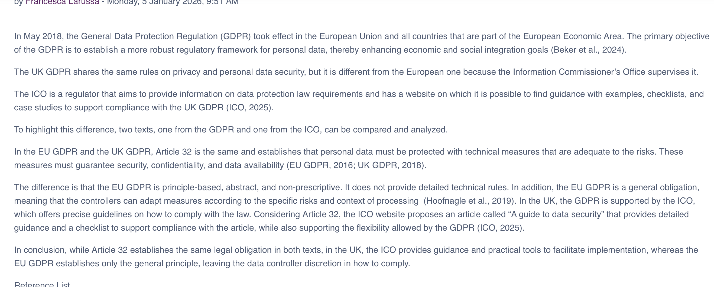Unit 9 - Data Management Systems and Models
Unit 9 focuses on database models and their applications. There are three approaches to data management:
- Traditional: creates separate files for each application. The major challenges are data redundancy and data integrity.
- Database: A pool of related data shared among multiple applications. The main advantages are: control of data redundancy and flexibility.
- DBMS that is composed of three parts: hardware (from a standalone computer to a network of computers), software, which includes DBMS, operating system, and network applications.
- Data used by the organisation and schema description (description of data)
A database can be hierarchical, which is easy to manipulate and has easy relations, a network that is more flexible, or relational, which allows linking relational tables.
Before designing a database, the following must be considered: content, access, logical structure, which is a model of how the database is structured to meet requirements, and physical organization, which refers to how data will be stored and organized in the database.
The DBMS to be implemented must support SQL (a programming language for extracting information from databases). In addition, the DBMS must support multiple users and be sufficiently efficient to handle large datasets and support easy migration between hardware.
The core artifacts for database implementation are as follows:
- A schema, which contains information about the database. It contains user restriction information, security measures, and access control.
- Data dictionary: description of all the data in the database
It is also important to list some key terms:
- Relation: a table with columns and rows
- Attribute: named columns of a relation
- Domain: Set of allowable values
- Tuple: a record of a relation
- Base table: record physically stored in the database
- Primary key: unique tuple identifier
- Foreign key: a set of attributes with one relation that match a candidate key of another table
Moving on to the database view, it is possible to define a view as a virtual relation that can also not exist in the database and is created upon a request. The view content is a query on one or more base relations to simplify the complex operations. Customized data through views and queries can show different data to different users.
In a database, an application program can be defined as a series of transitions that act on the data for a particular function. The transaction can be either successful or unsuccessful. Concurrency control allows the management of simultaneous operations on the database without interference.
Moving on to big data architecture, it is possible to affirm that big data architectures manage the ingestion, processing, and analysis of data that are too big or complex for traditional systems. Big data architecture supports batch and real-time data processing, interactive exploration, predictive analysis, and ML.
An example of an architecture is the Internet of Things (IoT), an event-driven architecture for devices that generate large volumes of data. Devices send events through gateways, stream processing allows real-time analytics, and data is stored for batch analysis and machine learning.
During this unit, I continued the collaborative discussion on “comparing compliance law,” posting two peer reviews, and I tried to create a DBMS from Python for a seminar activity.
Collaborative Discussion - Peer reviews
As mentioned above, during this Unit, I took part in a collaborative discussion on Comparing compliance laws. The screenshot below shows my two peer reviews
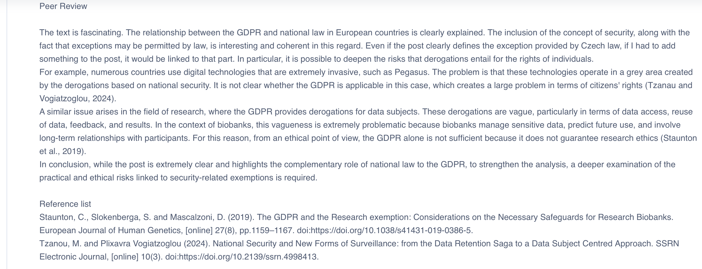 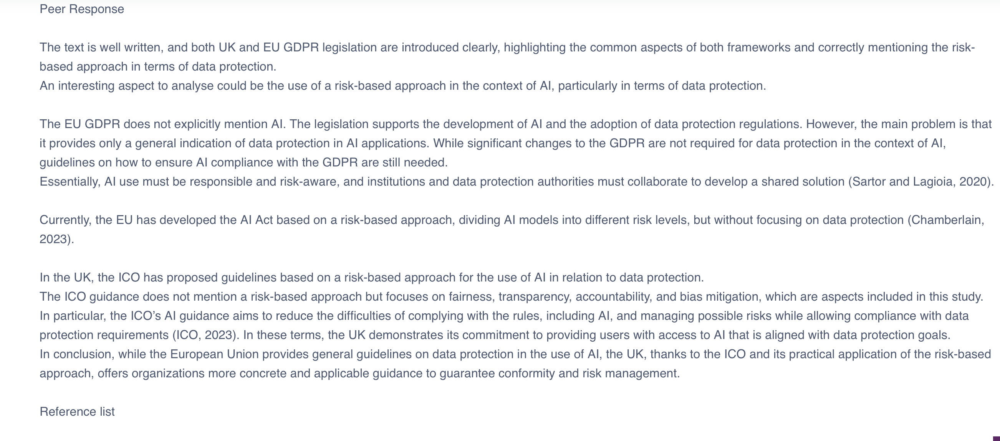Seminar Activity - Database build
During the Unit, I completed an database-building with Python. Below, you can download the python code, the database file and the exercise explanation
Exercise download
-
Here you can download the database file
Download database file -
Here you can download the exercise explanation
Download PDF -
Here you can download python code
Download python code
Unit 10 - More on APIs (Application Programming Interfaces) for Data Parsing
In Unit 10, the focus was on Application Programming Interfaces and database architecture for the book “Data Engineering Best Practices” by Schiller and Larochelle (2024), from which I selected Chapters 6 and 7.
The logical architecture is structured into three zones: bronze, silver, and gold. Gold data represent a single source of truth and are strongly protected and semantically defined; silver data can be considered intermediaries because they support transformation, enrichment, and caching.
Another component of the logical architecture is the data lake, which guarantees scalability, but it is not always useful in transactional cases; therefore, the architecture must also include high-performance caches, data marts, and in-memory systems. Data exchange must be managed through Change Data Capture, pub/sub systems, and code-based integrations.
The consumption zone provides access to data through analytics, BI, OLAP, ML graphs, and security analytics. Another extremely important component is operational management, which includes provisioning, monitoring, and observability. A cost estimator must be included, considering that every choice made during the logical phase affects costs.
Another aspect that affects cost is the choice of cloud, on-premises, hybrid, or multi-cloud.
In conclusion, the logical architecture includes components such as data quality, standardized flows, contracts, security, cost control, and scalability. Adopting an integrated vision of technology, business, and finance allows the creation of a sustainable platform that supports all business requirements.
The physical architecture translates logical features into concrete components, configurations, processes, and roles. During this phase, the technologies are executed, integrated, operated, and monitored.
These technologies are represented by physical diagrams that are readable as orchestrated flows and configurations that are managed through configuration management tools. In addition, it describes the failover process, recovery, scaling, and orchestration of the system.
Another important aspect is environment management, including development, integration, UAT/preproduction, production, audit, cold/warm standby, and high availability.
The physical architecture must be supported by ITTL processes, such as release, change, incident, and problem management, and by key roles, such as enterprise architect, chief engineer, and site reliability engineer.
To realize a solid, scalable, and future-proof data factory, logical and physical architectures must be aligned.
In this Unit, the IBM-QRADAR-Intellas-KAIF Integration is a case study.
KAIF is a platform that uses AI algorithms to analyse a large volume of security data and extract digital evidence from it. It focuses on two principles: verifying that the data are sent to the correct destination and ensuring that the information is secured even if it is intercepted
QRADAR is a security information and event management system that collects and manages network logs and events, performs forensic analysis, and rebuilds incidents, supporting both stand-alone and distributed deployments with high scalability and advanced threat analysis.
KAIF is integrated with QRADAR through Inter-Process Communication using QRadar’s Device Support Model. The result is that the data are collected by QRadar and analyzed by KAIF, which, as a result, provides information, threat indicators, and intelligence to QRadar.
The advantages are:
- Strengthening QRadar capability through KAIF machine learning
- Deep threat analysis
- Output generation that is adaptable to the security needs
During this Unit, the main activity was “API Security Requirements,” and continued the collaborative discussion “Comparing Compliance Laws” by posting a summary post.
This Unit helped me gain a better understanding of the database building phases, including logical and physical architecture, which proved extremely useful during the writing of my final project.
Collaborative discussion - Summary Post
During this Unit, I took part in a collaborative discussion on Comparing compliance laws. The screenshot below shows my Summary Post
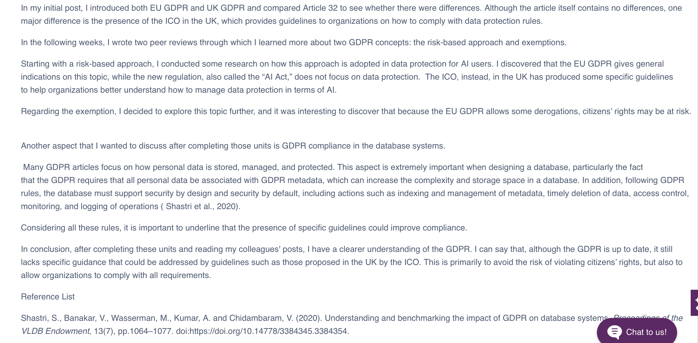API Security Requirements
As mentioned above, during this Unit, I completed the API Security Requirements exercise. Below you can download the exercise PDF
Download PDF section class="box">Unit 11 - DBMS Transaction and Recovery
During Unit 11, I had the opportunity to delve into uncommon file types and PDFs that are challenging to manage.
The general strategy to be followed is as follows:
- Identify a file type: control the file type or use the Python library python-magic
- Browsing online solutions
- Opening manually with a text editor or using the command open() in Python, if the characters are odd, verify the encoding
- Convert the data into an easier format.
The core Python tools for working with PDF files are as follows:
- slate: read the PDF as a memory string
- pdfminer: convert the PDF into text
- pdftable: use pdfminer and try to rebuild the tables
- tabula: extract the table in CSV
In addition, I used the Trailhead website to delve into data presentation. The three best practice categories for designing a dashboard are planning, informative design, and finishing.
Every element of the dashboard must be used to explain the data, and the use of colours or tooltips is used only to guide the interpretation. To create a good dashboard, clutter must be removed and significant differentiation added. In addition, it is necessary to add information that explains what the graph shows and tooltips with detailed information, while keeping them clear.
To create a clear dashboard in Tableau by combining vizzes and controlling the layout, dimension, and presentation to guide the user in understanding the data, the following key points must be considered:
- Define the dashboard dimension based on where it will be visualised
- Add clear titles and explanatory texts
- Remove elements that will distract the user
- Organize the layout and rename the dashboard with a clear name.
To create an interactive dashboard:
- Add a filter to help navigate data
- Show only relevant values in the filter
- Test the filter
n Unit 11, there are additional notes on database transactions and recovery.
A transaction is a series of database operations that can be fully executed or not. The transactions follow the ACID properties, which are:
- Atomicity: all is executed, or nothing is executed
- Consistency: the database moves from one consistent status to another
- Isolation: the transactions are isolated
- Durability: Once completed, the modifications are permanent and irreversible
The transaction manager manages the transaction and guarantees ACID properties. The use of commit produces permanent transactions, and the rollback cancels the modification if the transaction fails.
The transaction log is a file that records all transactions and how to cancel them, and contains previous and new values, a timestamp, and the transaction state.
If there is a system failure, to know how far back in the log file we must go, we can use checkpoints, which are system-controlled points at which synchronization occurs between the database and log file.
To recover from a system failure, all transactions that were running during the failure must be undone and restarted. A serious issue arises when there is a media failure; to recover from it, a backup is needed. Backups must be performed frequently to minimize data loss.
In this unit, I submitted a part of my final exam and posted on the wiki module an evaluation of the GFS backup procedure.
This Unit helped me delve into new concepts, such as transactions and backups, which are crucial aspects of database management. It allowed me to understand the importance of anticipating potential failures and errors when designing a database.
Back Up Procedure
During this Unit, I posted a text on GFS backup procedure on wiki module as it is possible to see in the screenshot below
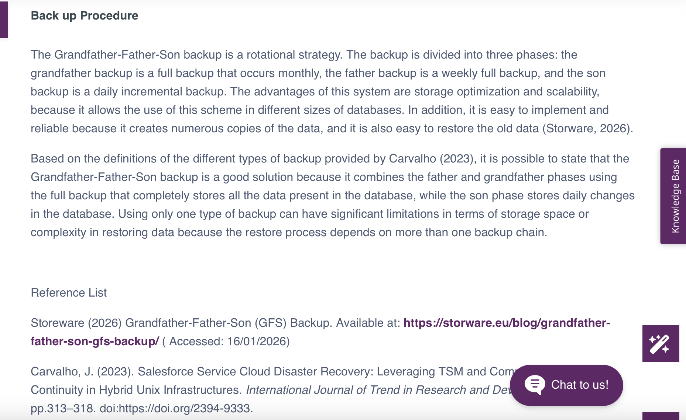